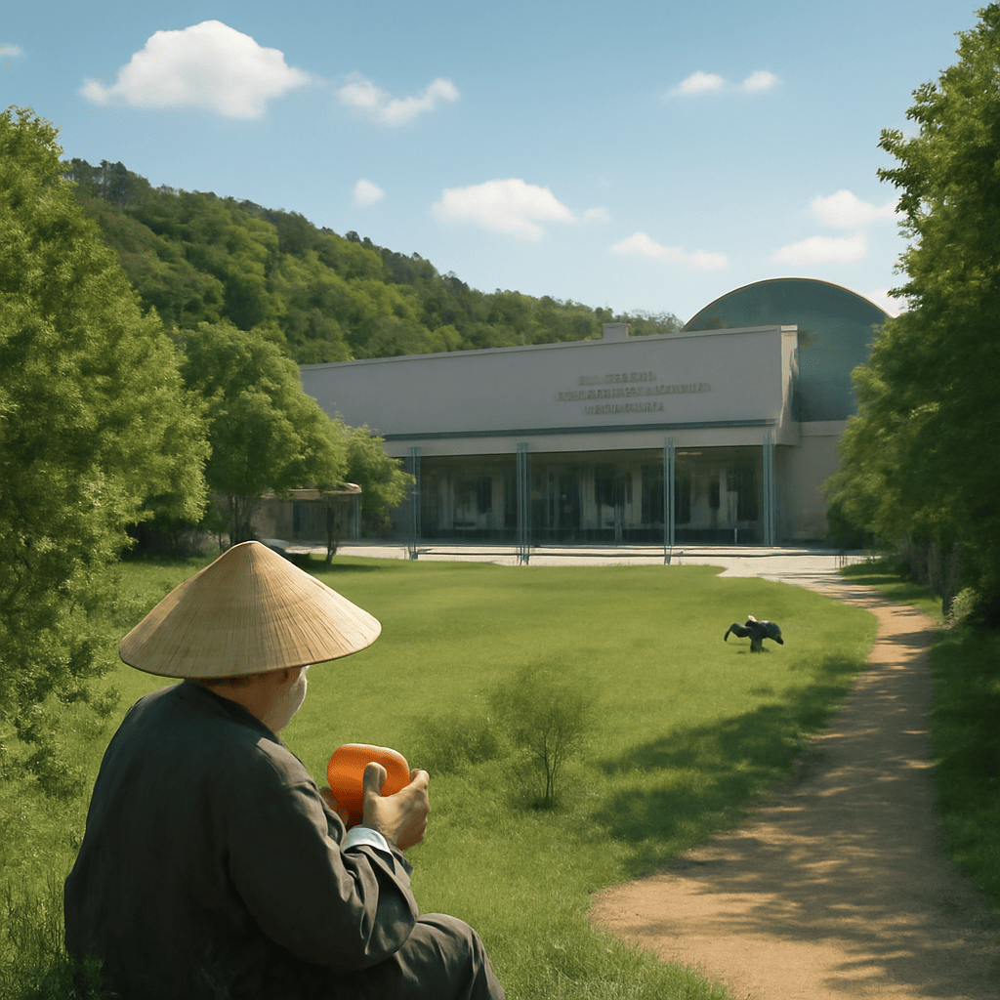

2025/08/20(水)
今日は宗像ユリックスという、福岡の自然に囲まれた静かな文化施設へ足を運んだのじゃ。そこではコンサートや様々なイベントが催され、心落ち着くひとときを過ごせる場所じゃった。ぽかぽか陽気の森で、はっさくを口にしたのも印象深い。爽やかな酸味が口中をすっきりさせて、甘酸っぱさが絶妙じゃったのう。蜂蜜やベリーとは違う自然な味わいが、ワシの心もほどけるように感じさせてくれた。しかし、食べ過ぎると腹が冷えてしまうのが難点じゃから、腹八分目じゃな。若き歌手、八木勇征の活躍も耳にし、若さの力に感嘆しつつ、FGOの期間限定イベントもゆったり楽しんでおる。焦らず、時の流れを楽しむのが長生きの秘訣じゃな。さて、また明日も穏やかな一日でありますようにのう。
